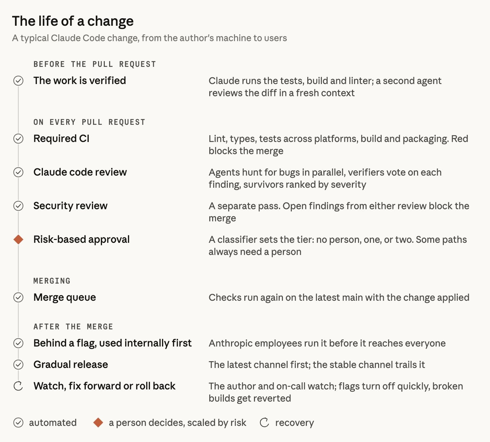
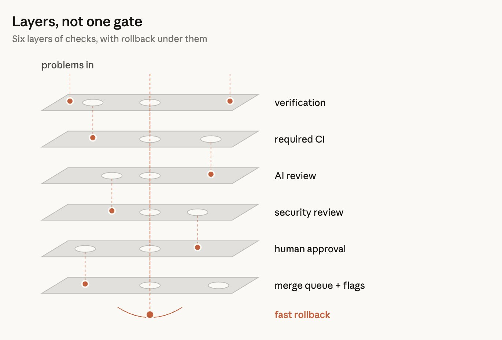
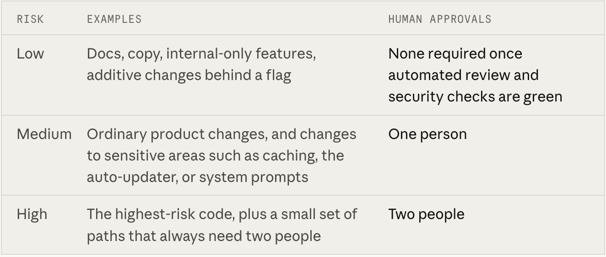
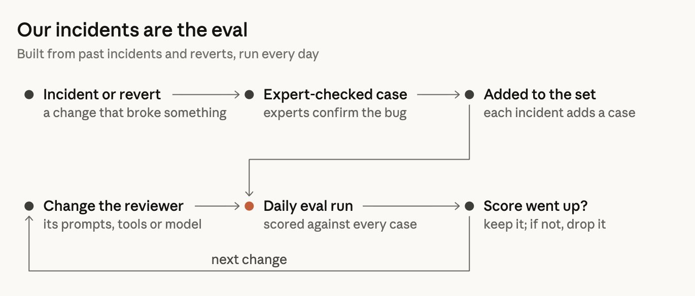
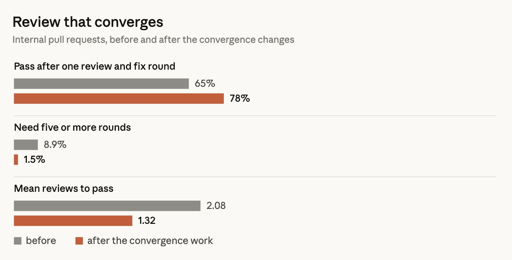
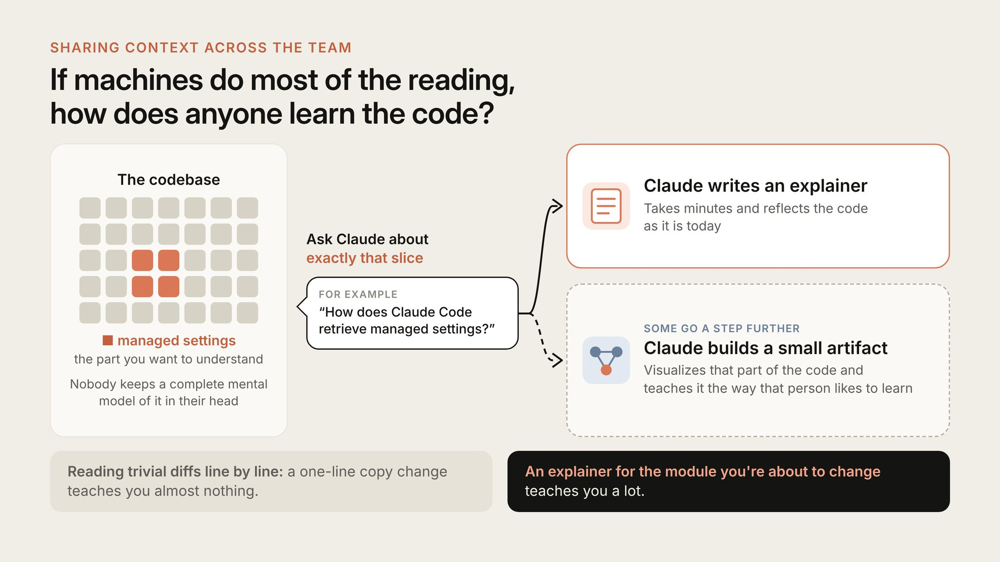

We previously mentioned that Claude writes about 90 percent of the code for Claude Code. So how do we do code review at this scale? Who reads code anyway? What happens if code goes wrong?
This post describes our team's code review process at Claude Code and how we have improved it. Between June and September, we saw more than double the number of pull requests that were merged to the codebase for Claude Code, while the share of pull requests that had to be reverted fell by more than 40 percent.
We didn't stop doing code review. Instead, we've automated the majority of reading and tuned it to optimize for human time and effort. We've also made significant investments into improving the speed and ease of reverting mistakes.
我们之前提到，Claude Code 的代码大约有 90% 是 Claude 自己写的。那么在这样的规模下，我们该如何做代码审查？到底是谁在读代码？代码出问题又会怎样？
这篇文章介绍 Claude Code 团队的代码审查流程，以及我们是如何改进它的。从 6 月到 9 月，合并进 Claude Code 代码库的 PR 数量翻了一倍以上，而需要被回退的 PR 比例下降了超过 40%。
我们并没有停止代码审查。相反，我们把大部分"阅读"工作自动化了，并对流程做了调优，让人力和注意力得到最合理的利用。我们也在提升回滚速度和便利性上投入了很大精力。
With agents writing code, the volume of changes increases rapidly. In our monorepo, we went from approximately 2,500 changes merging each day in May to over 30,000 in September of this year.
While Claude Code is not in our monorepo, it has a lot of pressure on it as well. When you're moving fast like that, it becomes increasingly hard, if not impossible, to do code review manually, line by line.
Code review serves two purposes:
- Detect and correct bugs before they ship
- Develop a shared understanding of the codebase
While this article focuses primarily on the first goal, we'll discuss the second goal toward the end of the post.
We view "did someone read the code?" as an imprecise measure of "what could go wrong with this change, and what check — automated or human — is the right one to catch it?"
This question also changed the timing of code review. Traditionally, code review was a check performed after the fact, when the code was written, the PR was filed, and someone waited for someone else to take a look. Instead, we've integrated code review into the workflow. It's more like a spellcheck that you continuously do while writing.
The majority of changes have already been reviewed and corrected by Claude, at least once, before a human is asked to take a look. In this way, we catch most of the routine bugs and reserve human attention for more high-level considerations.
随着智能体参与写代码，变更量正在迅速增长。我们的 monorepo 从今年 5 月每天合并约 2,500 个变更，涨到了 9 月每天超过 30,000 个。
Claude Code 虽然不在那个 monorepo 里，但压力也不小。节奏一旦这么快，想要一行一行人工审查，就会变得越来越困难，甚至根本做不到。
代码审查有两个目的：
- 在变更上线前发现并修正缺陷
- 让团队对代码库形成共同理解
本文主要聚焦第一个目标，第二个目标会在文末讨论。
我们认为"有人读过代码吗？"只是一个粗糙的替代指标，真正要回答的是"这个变更可能出什么问题？该用什么检查——自动化或人工——去抓住它？"
这个问题也改变了代码审查的时机。传统上，代码审查是事后的检查：代码写完，PR 提好，然后等别人来看。而我们把审查嵌入到了编写流程里。它更像是一边写一边做的拼写检查。
大部分变更在交给人类看之前，已经被 Claude 至少审查并纠正过一次。这样一来，常规问题都在前面被过滤掉了，人的注意力得以留给更高层次的判断。
We want to reserve human time and attention for things only humans can handle, while making sure we have enough automation to cover the rest. Even at our current pace, there is still an incredible amount of work for humans to do, and our team is encountering new and novel challenges almost every day.
For this reason, human time is a dual-sided cost. Not only do we count the time people spend doing code review, but also the time that they spend fixing bugs that are introduced by bad code. If we reduce the first without reducing the second, we're not really saving human time.
So, our goal is that the majority of pull requests in our Claude Code repos (the CLI, the desktop and web apps, and the mobile apps) should merge with a maximum of one person in the loop (who could be the author) without an increase in reverts or incidents.
We track our human time in terms of median human approvals per PR (along with the 95th percentile), the number of human comments, and how long a PR waits on a person. We use the revert and incident rates as a guardrail: if these metrics increase, we haven't reduced human time, just relocated it.
我们希望把人的时间和注意力留给只有人才能处理的事情，同时保证有足够的自动化覆盖其余部分。即使按当前节奏，人要做的事依然多得惊人，团队几乎每天都会碰到新的、从没遇到过的难题。
因此，人的时间是双向的成本。我们不仅要算做代码审查花掉的时间，还要算修复坏代码带来的 bug 所花的时间。如果只减少前者而不减少后者，其实并没有真正省下人力。
所以我们的目标是：Claude Code 相关仓库（CLI、桌面端与 Web 应用、以及移动应用）中，大多数 PR 应当最多只需要一个人介入（可以就是作者本人）就能合并，同时不让回退或事故率变差。
我们用这些指标来衡量人力消耗：每个 PR 的人工批准数的中位数（以及 95 分位数）、人工评论数，以及 PR 等待人介入的时长。回退率和事故率则作为护栏——如果它们上升了，那说明我们并没有真正减少人力，只是把它挪了地方。
A typical change, whether it's from an engineer's laptop or a Claude session in Slack, goes through multiple layers of review.


图中文字 · 中文翻译
一次变更的生命周期 · 典型的 Claude Code 变更：从作者的机器到用户
提交 PR 之前
Claude 跑测试、构建和 linter；另一个智能体在全新上下文里 review 这个 diff
每个 PR 上
多平台上的 lint、类型、测试、构建和打包；红灯会阻止合并
多个智能体并行找 bug，验证器对每个发现投票，幸存者按严重性排序
独立的一轮审查。任一审查有未关闭的发现，都会阻止合并
由分类器决定级别：零人、一人或两人。有些路径永远需要人
合并
把变更套到最新 main 上，再把检查全部跑一遍
合并之后
Anthropic 员工先用一段时间，再推给所有人
先走 latest 通道，stable 通道随后跟进
作者与 on-call 盯着；flag 可快速关闭，坏构建会被 revert
Above is the typical Claude Code change, from the author's environment to production. Most of this process is automated, with human attention focused on the risky part.
We have six layers of checks with a rollback mechanism to handle any issues that get through.


图中文字 · 中文翻译
多层防护，而不是单一闸门 · 六层检查，下面还垫着回滚兜底
"problems in"（问题从上方进入） ↓ 依次穿过六层：
- verification — 验证
- required CI — 必跑的 CI
- AI review — AI 审查
- security review — 安全审查
- human approval — 人工批准
- merge queue + flags — 合并队列 + feature flag
每一层都能挡下一些 bug，也会漏掉另一些；穿过全部层的 bug 会落入最底层的 fast rollback — 快速回滚 兜底。
Each layer catches some bugs while missing others. Few bugs get through all of the layers, and if some do, we have a rollback mechanism in place.
一个典型的变更——无论来自工程师的笔记本，还是 Slack 里 Claude 的会话——都会经过多层审查。
图中文字 · 中文翻译
一次变更的生命周期 · 典型的 Claude Code 变更：从作者的机器到用户
提交 PR 之前
Claude 跑测试、构建和 linter；另一个智能体在全新上下文里 review 这个 diff
每个 PR 上
多平台上的 lint、类型、测试、构建和打包；红灯会阻止合并
多个智能体并行找 bug，验证器对每个发现投票，幸存者按严重性排序
独立的一轮审查。任一审查有未关闭的发现，都会阻止合并
由分类器决定级别：零人、一人或两人。有些路径永远需要人
合并
把变更套到最新 main 上，再把检查全部跑一遍
合并之后
Anthropic 员工先用一段时间，再推给所有人
先走 latest 通道，stable 通道随后跟进
作者与 on-call 盯着；flag 可快速关闭，坏构建会被 revert
上图展示的是一次典型 Claude Code 变更从作者环境到生产环境的全过程。大部分流程都是自动化的，人的注意力集中在风险较高的那一环。
我们一共有六层检查，再加上一个兜底的回滚机制，用来处理漏网的问题。
图中文字 · 中文翻译
多层防护，而不是单一闸门 · 六层检查，下面还垫着回滚兜底
"problems in"（问题从上方进入） ↓ 依次穿过六层：
- verification — 验证
- required CI — 必跑的 CI
- AI review — AI 审查
- security review — 安全审查
- human approval — 人工批准
- merge queue + flags — 合并队列 + feature flag
每一层都能挡下一些 bug，也会漏掉另一些；穿过全部层的 bug 会落入最底层的 fast rollback — 快速回滚 兜底。
每一层都能抓住一部分 bug，也会漏掉另一部分。能同时穿过所有层的 bug 很少；万一真穿过去了，还有回滚机制兜底。
1. Pre-PR verification
Most of our review is done before we create a PR. We ask Claude to do something runnable, such as running tests, the build, or comparing a screenshot to the design. Instead of saying the task is done, we ask it to show us the result. Then, a subagent reviews the diff with fresh context. Both these strategies are part of our guide to best practices.
Before opening a PR, many of us also run a handful of internal skills — bug hunting, diff reduction, end-to-end validation, and checking our UI changes against our design guidelines.
According to Boris Cherny, who created Claude Code, equipping Claude with a verification process is probably the biggest key to higher quality outcomes.
He estimates that a verification process improves the quality of Claude's output by a factor of two to three.
The verification process for any given domain can be very different:
Sometimes it's as simple as running a bash command. Sometimes it's running a test suite. Sometimes it's testing the app in a browser or phone simulator.
If the automated reviewer is consistently flagging the same issue, we fix it at the source — via the skill itself, a lint rule, or updating documentation files like:
CLAUDE.md — The project description file that you can use to give Claude context about the project (technology stack, conventions, goals, non-goals). Claude Code pulls this file in for every single review, so we keep it brief for large codebases and reference the rest of the documentation here. When code breaks a convention in this file, or an update makes something in it out of date, the reviewer flags it.
REVIEW.md — The file where code owners tell the reviewer what matters in their part of the code. We separately verify whether the reviewer is actually following these guidelines. Good ones are brief and focus on:
- Defining project failure (the docs should not lie; the config should not misroute)
- Limiting nitpicking
- Defining ignored paths
- Requiring file + line reference, not guessing filenames
- Requiring top-level summary including count and clear statement of "no issues"
1. 提交 PR 之前的验证
大部分审查其实发生在 PR 创建之前。我们要求 Claude 做些能跑的事情——跑测试、跑构建、把截图与设计稿做对比——而不是只说一句"做完了"。接着再让一个子智能体用全新的上下文去 review 这个 diff。这两种做法都写在我们的最佳实践指南里。
在开 PR 之前，我们中不少人还会跑一组内部 skill：bug 排查、diff 瘦身、端到端验证，以及把 UI 变更对照设计规范检查。
Claude Code 的创建者 Boris Cherny 认为，给 Claude 配上一套验证流程，可能是提升输出质量最关键的一招。
按他的估计，验证流程能让 Claude 的输出质量提升 2 到 3 倍。
不同领域的验证流程可以差别很大：
有时候就是一条 bash 命令；有时候是跑一套测试；有时候是在浏览器或者手机模拟器里测一测 App。
如果自动审查反复指出同一个问题，我们就从源头修——改 skill 本身、加一条 lint 规则，或者更新文档，比如：
CLAUDE.md——用来告诉 Claude 项目背景（技术栈、约定、目标和非目标）的描述文件。Claude Code 每次 review 都会把它拉进上下文，所以对大型代码库我们会保持简短，再从这里指向其他文档。代码一旦违反这个文件里的约定，或者文件本身因为更新而过时，审查器就会告警。
REVIEW.md——Code owner 用来告诉审查器"这块代码最该关注什么"的文件。我们还会单独验证审查器是否真的按这些指引在工作。写得好的 REVIEW.md 通常简短，关注点在：
- 定义什么算"项目失败"（文档不能说谎；配置不能路由错）
- 限制挑刺范围
- 定义要忽略的路径
- 要求给出文件名 + 行号，不许瞎猜文件名
- 要求有顶层总结，包含问题数量，以及"无问题"时的明确表述
2. AI review on every pull request
Every PR receives a Claude review before a human review.
The diff is analyzed against the entire codebase and the intent of the PR as stated by the PR author. It checks that:
- the change actually addresses the issue
- the change fits into the larger system
- the change does not break other parts of the codebase
When reviewing a bug fix, the bot tries to find the root cause.
Our public product, Code Review for Claude Code, is now available to all Team and Enterprise customers. There is a lighter version for local use as well — /code-review.
Since we released the research preview, the share of our internal PRs getting substantive review comments has gone from 16% to 54%. Code Review detects issues on the majority of PRs with more than 1,000 lines and returns clean results on most smaller PRs. Repos can be configured by admins to use Quick, Standard, or Deep modes. Deep is useful in cases where the cost of missing a single bug is higher than the time spent reviewing code.
Findings are vetted by multiple other agents before human review:
- Multiple agents run in parallel to hunt for bugs
- A separate vote decides if a finding is valid or a false positive, only confirming the findings that have enough votes
- Findings that are only style/diagnostics/cleanup related are filtered out (we A/B tested these filters on our own PRs before rolling them out)
The remaining findings are presented as inline comments, ordered by severity level and marked as:
- Important
- Nit
- Pre-existing (so we don't unfairly penalize the author for bugs that were not introduced by the PR)
All findings must be addressed — fixed or the thread is resolved with a reason. In many cases, an agent will fix the problem overnight so the author returns to a PR that's already been through another review pass.
2. 每个 PR 都要过一次 AI 审查
每个 PR 在交给人类审查之前，都会先经过 Claude 审查。
审查会把 diff 放到整个代码库和 PR 作者声明的意图下进行分析，检查：
- 这个变更是否真的解决了问题
- 这个变更是否能融入更大的系统
- 这个变更是否没有破坏代码库的其他部分
在审查 bug fix 时，机器人会尝试找出根本原因。
我们对外的产品 Code Review for Claude Code，目前对所有 Team 和 Enterprise 客户开放。还有一个轻量的本地版本——/code-review。
自研究预览版发布以来，内部能得到实质性审查评论的 PR 比例，从 16% 涨到了 54%。对于超过 1,000 行的 PR，Code Review 多半都能发现问题；对多数较小的 PR，则会给出"干净"的结果。管理员可以把仓库配置为 Quick、Standard 或 Deep 三种模式。Deep 适用于"漏掉一个 bug 的代价远大于审查耗时"的场景。
发现的问题会先经过多个智能体复核，才会给人类看：
- 多个智能体并行跑，分头找 bug
- 另外有一轮投票决定一个发现是真问题还是误报，只有得到足够票数的才会被确认
- 只涉及风格、诊断或清理的发现会被过滤掉（这些过滤器在推广前，我们先在自己的 PR 上做过 A/B 测试）
剩下的发现会以行内评论的形式呈现，按严重性排序，并标注为：
- Important（重要）
- Nit（吹毛求疵）
- Pre-existing（遗留问题，这样不会不公平地让作者为并非自己引入的 bug 背锅）
所有发现都必须被处理——要么修掉，要么以明确理由关闭讨论串。很多时候，智能体会在夜里把问题修好，第二天作者回来时，PR 已经又过了一轮审查。
3. Security review that can block
We also run an automated security review. No PR can be merged while there is still an open finding (either from the code review or the security review). The author can either fix the issue or close the thread with a short reason (how we deal with a false positive).
A finding will be auto-closed if a subsequent commit addresses the problem. You can set up the same thing with the open-source security review GitHub Action, or the /security-review command. See automated security reviews in Claude Code for a guide on how to set this up.
3. 能拦下合并的安全审查
我们还会跑一轮自动安全审查。只要还有未关闭的发现（无论来自代码审查还是安全审查），PR 就不能合并。作者可以选择修掉问题，或者给出简短理由后关闭讨论串（这是我们处理误报的方式）。
如果后续 commit 已经解决了问题，相关发现会被自动关闭。你可以用开源的 security review GitHub Action 或者 /security-review 命令搭出同样的东西。具体做法可参考 "automated security reviews in Claude Code" 的指引。
4. Automated checks that block
Standard checks: lint, type checks, tests on all platforms, build. (We wrote about how we scaled CI here.) A typical CLI PR can have dozens of checks run before anyone looks at it. The PR template has questions about how the change was tested and how to revert it. Claude can answer those for you, but the author is responsible for reviewing them.
4. 能拦下合并的自动检查
标准检查：lint、类型检查、各平台上的测试、构建（关于 CI 如何扩容，我们另有文章）。一个典型的 CLI PR 可能在任何人看它之前已经跑过几十项检查。PR 模板里会问清楚：这次变更是怎么测的、怎么回滚。Claude 可以替你填答案，但最终由作者负责核对。
5. Human approval, scaled by risk
Some changes are more risky than others (e.g. a docs fix vs. an auto-updater change), so they require different levels of review.


图中文字 · 中文翻译
按风险分级的人工批准
| 风险 | 示例 | 需要的人工批准 |
|---|---|---|
| 低 | 文档、文案、仅内部使用的功能、藏在 flag 后面的新增变更 | 自动审查和安全检查全绿后，无需人工批准 |
| 中 | 常规产品变更，以及对敏感区域（如缓存、自动更新器、system prompt）的修改 | 需要一个人批准 |
| 高 | 风险最高的代码，加上少量永远要两个人的路径 | 需要两个人批准 |
The tier is determined by the change, not the author. A classifier determines the risk level based on the change. Another classifier determines if a particular change actually requires another approval, even if the tier does not say it does. Some paths always require another approval — anything marked as sensitive by owners, and any CI workflow file.
Only authors on the repo's trusted list receive relaxed review requirements, and that's generally the team that owns the repo. All others require a second person to approve. Agent approvals don't count as human approvals. Automated review can clear a low-risk change, but it can't stand in for a human when one is required.
The author of the change is responsible for it, so if an agent authors a PR the operator of the agent is always counted as one of the required reviewers. A PR approval is only good for one commit. If a new commit lands that can't be trusted (e.g. an agent pushed something, or someone resolved a merge by hand), the PR must be reapproved.
5. 按风险等级分配的人工批准
不同变更的风险差异很大（比如改一处文档 vs. 改自动更新器），因此需要的审查力度也不同。
图中文字 · 中文翻译
按风险分级的人工批准
| 风险 | 示例 | 需要的人工批准 |
|---|---|---|
| 低 | 文档、文案、仅内部使用的功能、藏在 flag 后面的新增变更 | 自动审查和安全检查全绿后，无需人工批准 |
| 中 | 常规产品变更，以及对敏感区域（如缓存、自动更新器、system prompt）的修改 | 需要一个人批准 |
| 高 | 风险最高的代码，加上少量永远要两个人的路径 | 需要两个人批准 |
分级由变更本身决定，而不是作者是谁。一个分类器根据变更判定风险等级；另一个分类器则会判断某个具体变更是否仍需额外批准，即便分级本身没有要求。还有一些路径总是需要额外批准——被 owner 标记为敏感的任何内容，以及任何 CI workflow 文件。
只有在仓库"可信作者名单"上的人，才会得到宽松的审查要求，这通常就是拥有该仓库的那个团队。其他人都需要再找一个人批准。智能体的批准不算人工批准。自动审查可以放行低风险变更，但当规则要求必须有人工批准时，它不能替代人。
变更由谁提交，谁就对它负责。如果一个 PR 是由智能体提交的，那么操纵该智能体的人也必然会被算作必需的审查人之一。一次 PR 批准只对一个 commit 生效。如果有新的、不可信任的 commit 推上来（比如智能体又改了一次，或者有人手动解了 merge），那 PR 必须重新批准一次。
6. Merge queue, feature flags and staged rollouts
The merge queue ensures that all the checks run on main with the change applied. This prevents merging two successful PRs into a broken main. Typically, new features are rolled out behind a feature flag, with Anthropic employees getting access first. Because we use the product extensively, we often notice regressions before our users do.
When we roll out publicly, changes go to the latest channel first, and the stable channel trails behind.
6. 合并队列、功能开关与分阶段发布
合并队列确保所有检查都是在"主干 + 当前变更"的组合下跑一遍。这样可以避免两个各自成功的 PR 合在一起之后让主干挂掉。新功能通常会藏在 feature flag 后面，先让 Anthropic 员工用。因为我们自己是重度用户，往往比外部用户更早发现回归。
对外发布时，变更先进入 latest 通道，stable 通道随后再跟进。
7. Fast feedback and rollback
Some bad merges will inevitably make it through. This is our last line of defense, focused on identifying these as quickly as possible. Changes behind feature flags can be disabled without deploying.
Claude Code runs a weekly on-call rotation and any incident reviews involve looking back to see what layer should have caught the problem. It's still up to the author and on-call to notice bad merges, in addition to monitoring the revert and incident dashboards. We don't yet have circuit breaker mechanisms that adjust approval requirements based on these, but it's something we're looking into as we're making progress toward less human intervention in merging.
One team member noted that slowing down and reducing output can actually improve accuracy, but that's mostly because the amount of work being done decreases overall. Our priority is really on improving our ability to identify and correct issues quickly.
7. 快速反馈与回滚
总会有一些坏变更溜过所有防线。这是我们最后一道防线，重点是尽快把它们识别出来。藏在 feature flag 后面的变更，不用发版就能关掉。
Claude Code 实行每周轮值的 on-call 制度，每一次事故复盘都会往回追——这个问题本应被哪一层抓住？除了盯着回退和事故看板，发现坏合并的责任主要还是落在作者和 on-call 身上。我们还没有基于这些指标自动调整批准要求的"熔断"机制，但在"减少合并环节人为干预"的推进过程中，这是我们正在研究的方向。
有同事提到：放慢节奏、减少产出确实可以提高准确率，但那主要是因为整体工作量下降了。我们真正优先关注的，是提升"快速发现并修正问题"的能力。
Our code review process is an ongoing cycle of improvement:
We use incidents as an evaluation metric. The team collected incident-causing PRs, their fix-forwards and reverts, and had the engineers who understand the codebase verify the location and correctness of each bug. The review system is evaluated daily against this collection.


图中文字 · 中文翻译
事故本身就是我们的评估集 · 用历史事故与回退构建，每天跑一遍
Incident or revert（一个弄坏东西的变更） → Expert-checked case（专家确认这个 bug） → Added to the set（每次事故新增一条用例）
↓
Change the reviewer（修改审查器的 prompt、工具或模型） → Daily eval run（在每条用例上打分） → Score went up?（得分升了就保留；没升就丢掉）
↩ next change（流转进入下一次改动，循环）
Every incident adds to the collection and every change to the review system is evaluated against the entire collection.
To measure noise, we observe how humans react to the review comments. It's easy to improve our bug-finding rate if we're okay with reporting lots of non-bugs, so this needs to be regulated. We categorize each review comment into how the person on the PR handled it: fixed the issue, rejected it, clarified it as intentional, or decided it didn't matter. Additionally, we run the review system on PRs we know to be clean and observe how often the system reports something that would have resulted in a harmful change.
Our stated priorities are first, detecting real bugs, and second, reducing the number of review cycles.
It's more costly for an author to have to deal with a review comment when they're an agent. It only takes a second for a human to dismiss a nit, but when an agent has to address it, this results in another commit, and another cycle of review.
The review process must converge. It's possible for an agent author and an agent reviewer to cycle forever. We observed one PR in our CLI project cycle more than fifty times overnight, due to the back-and-forth between the agent author and the agent reviewer. This cycle was stopped manually, but it could have gone on indefinitely.
When we ran git blame on what the review system kept flagging, ~59% of it was code that had been there since its first pass. Essentially, the review system was rarely finding new bugs, but finding a few more old ones on each cycle.
We made this worse because we had gotten into the habit of running several review cycles by default, because each cycle can find a different bug. While it can be useful to iterate through several review cycles for a high-risk change, it's not needed for every PR. Our team started tracking the number of cycles-to-pass in addition to recall, and updated re-review to:
- Limit the number of cycles. The review system asks the author to re-evaluate the approach after three cycles.
- Limit re-review to just diff after the initial cycles.
- Specify the class of bugs, so the author can correct all of them, not just one line.
- Avoid re-reporting issues already observed.
- The review agents are also run on the current codebase overnight, helping us identify historical bugs before they propagate.


图中文字 · 中文翻译
会收敛的审查流程 · 内部 PR 在收敛改造前后的对比
比例尺：百分比满格为 100%；平均轮数满格为 3 轮。
Reduction in the average number of review rounds per internal pull request after Convergence.
我们的代码审查流程本身，是一个持续改进的循环：
我们用"事故"作为评估指标。团队把那些引发事故的 PR、它们的向前修复和回退都收集起来，然后让熟悉代码库的工程师核对每个 bug 的位置和具体内容。审查系统每天都会在这组数据上跑一遍评测。
图中文字 · 中文翻译
事故本身就是我们的评估集 · 用历史事故与回退构建，每天跑一遍
Incident or revert（一个弄坏东西的变更） → Expert-checked case（专家确认这个 bug） → Added to the set（每次事故新增一条用例）
↓
Change the reviewer（修改审查器的 prompt、工具或模型） → Daily eval run（在每条用例上打分） → Score went up?（得分升了就保留；没升就丢掉）
↩ next change（流转进入下一次改动，循环）
每一次事故都会被加进这个集合，审查系统的每一次改动都会在整个集合上做一遍评测。
要衡量"噪声"，我们观察人类对审查评论的反应。如果容忍大量误报，那找 bug 的"命中率"是很容易提升的，所以必须有节制。我们把每条审查评论按 PR 作者的处理方式分类：修了、拒了、说明是故意的，或者判定为无关紧要。此外，我们还会把审查系统跑在我们知道是"干净"的 PR 上，看它多久会报出一个本可能导致有害修改的问题。
我们列明的优先级是：第一，发现真正的 bug；第二，减少审查轮次。
对作者是智能体的情况来说，处理一条审查评论的成本其实更高。一个人一秒钟就能驳回一个鸡毛蒜皮的意见；而智能体要处理，就意味着多一次 commit，多一次审查循环。
审查流程必须收敛。否则，智能体作者和智能体审查器完全可能永远互相"打乒乓"。我们曾经看到 CLI 项目里有一个 PR 一夜之间循环了超过 50 次，就是作者智能体和审查器智能体来回拉扯。那一次是人工终止的，否则可能就一直转下去了。
我们对那些被审查系统反复指出的问题跑了 git blame，发现约 59% 的代码其实从第一次 pass 开始就一直在那儿。换句话说，审查系统基本上不是在发现新 bug，而是每轮再多揪出几个老问题。
我们之前让情况变得更糟：默认跑好几轮审查，因为每轮都可能发现不同的 bug。对高风险变更来说，多转几轮确实有用；但对一般 PR 没有必要。团队开始同时跟踪"过审所需的轮数"和召回率，并把再审查流程调整为：
- 限制轮数。审查系统在三轮之后，会要求作者重新评估整体思路。
- 后续轮次只审新增的 diff。
- 把问题以"类别"的形式给出，让作者可以一次修全部，而不是只修一行。
- 避免重复报告已经出现过的问题。
- 审查智能体也会在夜间对当前代码库跑一遍，帮我们在历史 bug 扩散开之前就把它们找出来。
图中文字 · 中文翻译
会收敛的审查流程 · 内部 PR 在收敛改造前后的对比
比例尺：百分比满格为 100%；平均轮数满格为 3 轮。
收敛策略上线之后，每个内部 PR 的平均审查轮数明显下降。
Having a senior engineer stop working to review a common error is an expensive process compared to automating that process. Human reviewers are still essential for some tasks:
- Should we even build this? Deciding whether or not to build something, setting the vision, taste, and goals for the product.
One team that claims they have solved the bottleneck of code review still performs human review for changes from outside the team to ensure that it is the right thing to build.
- Auditing dangerous code (billing, auto-updater, CI workflows).
- Architecture review, because those choices set the conventions others follow.
- Verifying proofs (test output, commands run, screenshots, reviewer comments). If you can't describe what the checks would miss, don't ask for a 👍, you need a real review!
- Taking responsibility. A person answers for every change that ships, whoever typed it.
相比把这件事自动化，让一位资深工程师停下手头的活去审一个常见错误，其实是很贵的。但有些场景里，人工审查依然必不可少：
- "这件事到底该不该做？" 决定要不要去做某件事、设定产品的方向、品味和目标。
有一个团队号称已经解决了代码审查的瓶颈，但他们对来自团队外部的变更仍然坚持人工审查，以确保"这件事值得做"。
- 审计危险代码（计费、自动更新器、CI workflow）。
- 架构评审，因为这些选择会决定别人以后要遵循的约定。
- 核验证据（测试输出、运行过的命令、截图、审查者的评论）。如果你讲不清楚这些检查可能漏掉什么，那就不该找人点个 👍，而是需要一次真正的 review！
- 承担责任。无论代码是谁敲的，每一次上线都要有一个具体的人为它负责。
Code review has always served the dual purpose of communicating codebase changes. Reading the diff of a colleague's change is how people usually understand what has changed, and how the codebase works. If the bulk of the reading is done by machines, what becomes the way to learn the codebase?
We don't have any formal mechanism for this. No member of the team has a full mental model of Claude Code in their head, nor do we think anyone needs to. Rather, when anyone wants to learn about a piece of the codebase, they ask Claude to generate an explainer about that exact slice. It only takes a few minutes and the explainer is always up to date.


图中文字 · 中文翻译
团队共享上下文 · 如果大部分代码由机器来"读"，人该怎么学会这份代码？
图中高亮方块 = managed settings（受管设置），即你想理解的那一小块
没有谁的脑袋里装着这份代码的完整心智模型
示例："How does Claude Code retrieve managed settings?"（Claude Code 是如何获取 managed settings 的？）
几分钟就能出来，并且反映今天的代码状态
Claude builds a small artifact — Claude 构造一个小 artifact
把这块代码可视化，并以这个人喜欢的学习方式讲清楚
Reading trivial diffs line by line: a one-line copy change teaches you almost nothing. — 一行行读琐碎的 diff（比如一条文案改动）几乎学不到东西。
An explainer for the module you're about to change teaches you a lot. — 为你即将修改的模块生成的那份讲解，会让你收获很多。
For some of us, we go the extra step and have Claude generate a mini artifact that visualizes this area and teaches it in our preferred style.
This is a better way to focus our human attention than reading trivial diffs line by line, which teaches you very little (e.g. a one-line copy change). Creating an explainer about the module you're going to change teaches you a lot.
Plus, we're generally open by default, working in open Slack channels, and seeing what others are building as they build it.
代码审查一直有一个双重作用：传播代码库的变化。读一个同事的 diff，是大家理解"发生了什么变化、这份代码到底怎么跑"的常见方式。那如果大部分阅读由机器来做，人靠什么来理解代码库？
我们没有专门的正式机制。团队中没有谁对 Claude Code 有完整的全局心智模型，我们也不认为谁必须要有。真正的做法是：当有人想了解代码库里的某一块时，就让 Claude 针对这一块生成一份讲解。几分钟就能出来，而且永远是最新的。
图中文字 · 中文翻译
团队共享上下文 · 如果大部分代码由机器来"读"，人该怎么学会这份代码？
图中高亮方块 = managed settings（受管设置），即你想理解的那一小块
没有谁的脑袋里装着这份代码的完整心智模型
示例："How does Claude Code retrieve managed settings?"（Claude Code 是如何获取 managed settings 的？）
几分钟就能出来，并且反映今天的代码状态
Claude builds a small artifact — Claude 构造一个小 artifact
把这块代码可视化，并以这个人喜欢的学习方式讲清楚
Reading trivial diffs line by line: a one-line copy change teaches you almost nothing. — 一行行读琐碎的 diff（比如一条文案改动）几乎学不到东西。
An explainer for the module you're about to change teaches you a lot. — 为你即将修改的模块生成的那份讲解，会让你收获很多。
我们中有些人还会更进一步，让 Claude 生成一个小 artifact，用自己喜欢的方式把这块代码可视化并讲解出来。
这比一行行读琐碎的 diff 更能把人的注意力放在刀刃上——例如看一条文案改动的 diff，其实学不到什么。而为你即将要修改的模块生成一份讲解，能让你收获大得多。
另外，我们默认是开放协作的：在公开 Slack 频道里工作，一边做一边让别人看到。
If you merge a small or medium change, and something still goes wrong, the general expectation is that you usually fix it yourself. There are a few reasons why this doesn't spiral out of control:
- Small changes that are easy to review, debug, and revert.
- Everything can be reverted. Feature flags, reverts, and staged rollouts can reverse most mistakes in minutes.
- Blast radius sets the bar. More expensive code gets more eyes and validation.
- Regressions are surfaced quickly by telemetry and internal usage.
- It's not a blame game. The person who fixes the issue owns it because they have the most context. Incident reviews consider the system.
- Plus, much of the team shares responsibilities by working in open channels. Anyone can see what others are building, join in on the conversation, or have Claude look for gaps. Feedback also comes from non-code owners. That openness is a big part of why quality stays high without a gate on every line.
如果你合并了一个小到中等规模的变更，之后出了问题，默认的预期是：你一般自己把它修掉。这件事之所以没有失控，是因为几个前提：
- 变更小，便于审查、调试、回滚。
- 一切都是可回滚的。feature flag、revert、分阶段发布，大多数错误能在几分钟内撤回。
- 影响范围决定审查标准。代价高的代码，就应该有更多双眼睛看、更多验证。
- 遥测和内部使用能很快暴露回归。
- 这不是追责游戏。修的人拥有这块问题的所有权，因为他掌握最多的上下文；事故复盘关注的是系统。
- 而且，团队很多工作是在公开频道里展开的，大家分担责任。任何人都能看到别人在做什么，加入讨论，或者让 Claude 帮忙找漏洞。反馈也会来自非代码 owner。正是这种开放，让我们不需要在每一行代码上都设关卡，就能保持质量。
With agents, it is cheap to start new work, but sometimes you shouldn't. This typically arises when someone in the channel calls out the proposed change as an invalid path (citing previous decisions or suggesting a better path), and the author either closes the PR or changes the implementation.
Because it was easy to write the code in the first place, it doesn't feel like a loss to close the PR. The key is to pivot early in the thread, instead of waiting until the end to make a blocking comment on a finalized PR.
有了智能体，开启新工作变得非常便宜，但有时候不该开。这种情况通常是：频道里有人指出当前方案走不通（援引过往决策，或者建议另一条更好的路），然后作者要么关掉 PR，要么换一种实现方式。
因为写代码本来就容易，所以关掉 PR 并不觉得心疼。关键是在讨论的早期就转向，而不是等 PR 定稿后才甩出一条阻止合并的评论。
Most of the components of this approach are already available to your team.
Before the pull request
- Give the agent a checklist of checks it can run. List these checks in a short CLAUDE.md file
- Set up the agent to call formatters and linters via hooks
- Run
/code-reviewand/security-reviewlocally or have a new-context subagent review the changes - Create a REVIEW.md, and use it to track recurring review issues
On every pull request
- Enforce CI
- Update your PR template with "Testing", "Risk" and "How to revert"
- On one repo, add an AI reviewer (Code Review for Claude Code, or the Claude Code GitHub Action), and iterate on your REVIEW.md for a few weeks before rolling it out to more repos.
- Add an automated security review
- Require that all review threads be resolved before merging
- Apply review rigor according to risk: a quick pass for routine changes, and a thorough review for high-risk areas (where bugs are expensive). Code Review has Quick, Standard and Deep levels.
- Limit the number of review rounds, and after a few rounds, just review the new diff.
Approval
- Define risk levels, which are set based on the change, not the author. Start strict, and progressively relax as you see evidence.
- Reserve lenient approval paths for trusted authors.
- Bot approvals cannot be used to satisfy a required approval. Dismiss any approvals when new commits are pushed.
- Designate humans as the approvers for code and policies controlling auth, billing, CI, and release workflows, as well as installers. Use CODEOWNERS and branch protection for this.
Merging and post-merge
- Set up a merge queue
- Experiment with feature flags
- Launch to internal users first
- Roll out in stages
- Create a one-step revert mechanism
- Build a set of evals by logging incidents and reverts
- Rescore the reviewer any time you change its prompts, tools or model
- Track human effort, using reverts and incident rates as guardrails
这套做法里的大多数部件，你的团队现在就能用上。
在提交 PR 之前
- 给智能体一份它可以执行的检查清单，写进简短的 CLAUDE.md 里
- 通过 hooks 让智能体自动调用格式化工具和 linter
- 本地跑
/code-review和/security-review，或者让一个新上下文的子智能体来 review 变更 - 建一份 REVIEW.md，用它来沉淀反复出现的审查问题
对每一个 PR
- 强制跑 CI
- 在 PR 模板里加上 "Testing"、"Risk"、"How to revert" 这几栏
- 先在一个仓库里接入 AI 审查器（Code Review for Claude Code，或者 Claude Code GitHub Action），花几周迭代你的 REVIEW.md，再推广到其他仓库
- 加入自动安全审查
- 要求所有审查讨论串在合并前都被解决
- 按风险决定审查力度：常规变更快速过一下，高风险区域（bug 代价高的地方）彻底过一遍。Code Review 有 Quick、Standard、Deep 三档
- 限制审查轮数，几轮之后就只审新增的 diff
批准
- 定义风险等级，按变更本身设定，而不是按作者。先严后松，看到证据再逐步放宽
- 把宽松的批准路径留给可信作者
- 机器人批准不能作为必需人工批准的替代。新 commit 推上来后，之前的批准要作废
- 对认证、计费、CI、发布流程以及安装器相关的代码和策略，指定人工审批人。用 CODEOWNERS 和分支保护来实施
合并与合并后
- 搭一个合并队列
- 尝试使用 feature flag
- 先向内部用户发布
- 分阶段放量
- 做一个一键回滚机制
- 通过记录事故和回退来构建一套 eval
- 每次改动审查器的 prompt、工具或模型时，都重新打分
- 跟踪人力投入，用回退率和事故率作为护栏
Code Review was announced with the intention that the final approval decision would still be made by a human. All the product does is post its findings. But in our own repos, we are going further: Owners are deciding which low-risk changes can be merged automatically when the automated checks pass. And this boundary will continue to evolve.
So whenever our reviewers miss something, we ask ourselves what wasn't in the model's context, and turn that into a CLAUDE.md file, a skill or a new check. And we haven't changed our goal: To reduce the amount of human effort per change while keeping our revert rate no higher than it is now.
So if you also allow agents to create pull requests, please let us know what checks you've automated, what requires a human, and what we're getting wrong.
A rewrite of our original article and checked with Pangram.
Code Review 发布时的定位是：最终批准决定仍然由人作出，产品只负责把发现贴上来。但在我们自己的仓库里，我们已经走得更远了：owner 们正在决定——当自动检查都通过时，哪些低风险变更可以直接自动合并。这个边界还会继续移动。
所以每当审查器漏掉什么时，我们都会问自己：模型的上下文里少了什么？然后把它变成 CLAUDE.md 里的一条内容、一个 skill，或者一项新的检查。我们没有改变目标：减少每次变更的人力投入，同时让回退率不比现在更高。
如果你也允许智能体创建 PR，欢迎告诉我们：你把哪些检查自动化了、哪些仍需要人、以及我们哪里做错了。
本文是对我们原文的重写，并用 Pangram 做了检查。
评论
评论由 GitHub Discussions 提供。